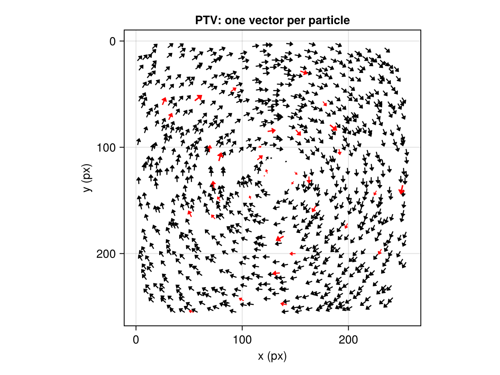
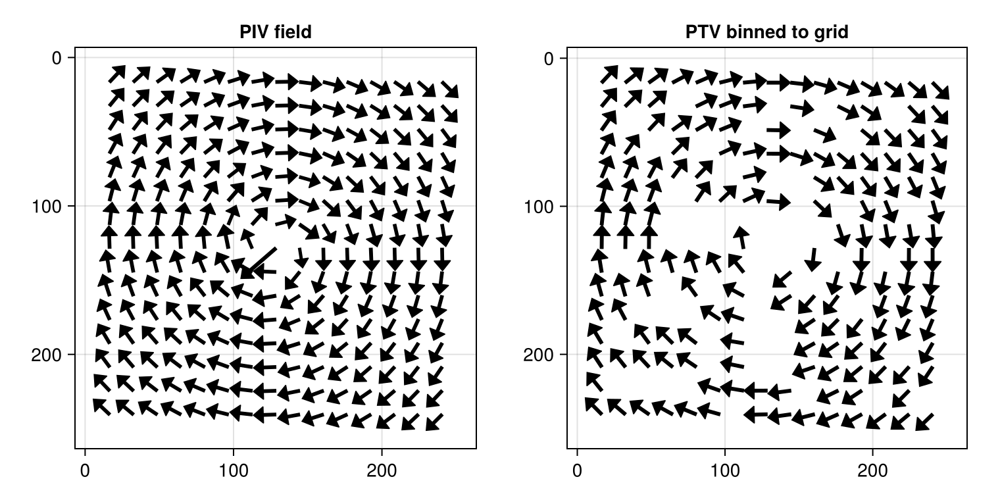
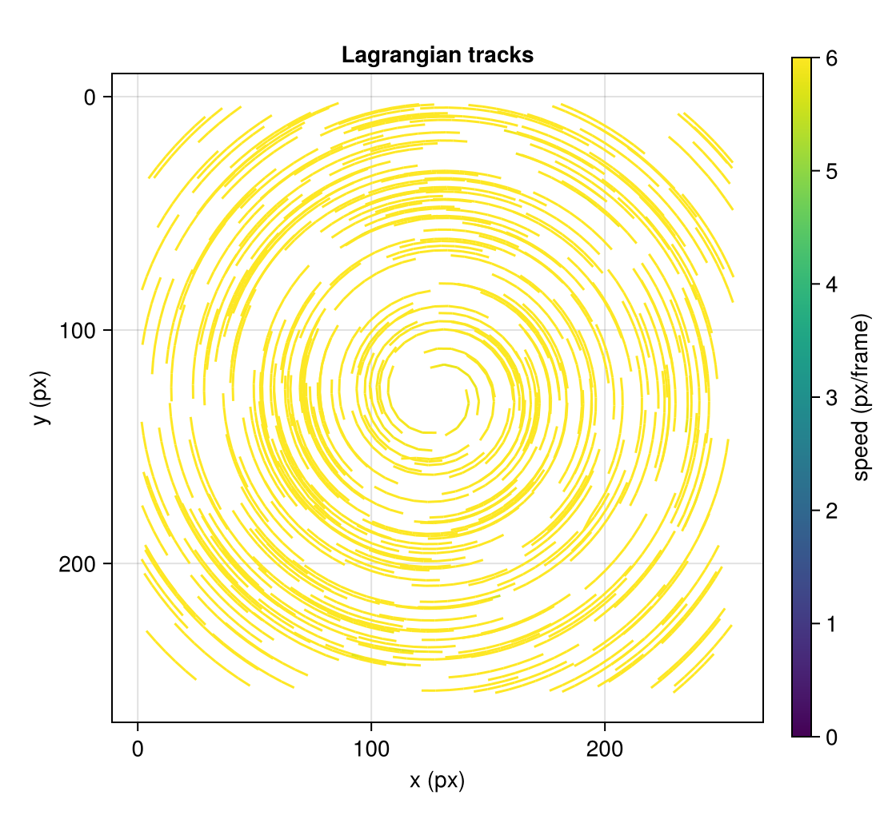

Particle tracking (PTV)
Cross-correlation PIV reports one vector per interrogation window. When the seeding is sparse — near a wall, in a dilute spray, or wherever you want Lagrangian particle paths rather than an Eulerian field — it is better to track individual particles. Hammerhead's PTV pipeline detects particles in each frame, matches them across a pair, and links them across a sequence. Everything here is synthetic and self-contained, so the ground truth is known exactly.
A tracked image pair
We start from the same kind of synthetic pair as the PIV tutorials, but at a lower seeding density — the regime where tracking shines.
using Hammerhead
using Hammerhead.SyntheticData
using Random
vortex = vortex_flow(128.0, 128.0, 6.0, 0.0) # constant 6 px azimuthal speed
imgA, imgB, truthA, truthB = generate_synthetic_piv_pair(
vortex, (256, 256), 1.0;
particle_density = 0.015,
background_noise = 0.01,
z_range = (-1.0, 1.0),
rng = MersenneTwister(42),
)
size(imgA)(256, 256)run_ptv does the whole two-frame analysis. By default it is hybrid: a coarse run_piv runs internally to predict where each particle goes, so nearest-neighbor matching stays reliable even when the displacement (here ~6 px) is larger than the particle spacing (Keane et al., 1995). Matched vectors are then validated with a scattered normalized-median test (Duncan et al., 2010) that flags outliers but never replaces them — a tracked displacement is a measurement of one particle, with nothing meaningful to substitute.
ptv = run_ptv(imgA, imgB)PTVResult{Float64}(842 matches of 1025/1017 particles, 35 outliers)The PTVResult stores the frame-A particle positions (x, y), the displacement to frame B (u, v), and diagnostics. The Makie extension draws the scattered vectors directly (outliers in red):
using CairoMakie
plot_vector_field(ptv; axis = (title = "PTV: one vector per particle",))
Frame-A attribution makes the ground-truth check exact
generate_synthetic_piv_pair returns index-aligned truth (truthA[i] ↔ truthB[i]), and PTV attributes each vector to the frame-A particle position — exactly matching the forward-Euler contract of the generator. So unlike PIV's symmetric deformation (which needs a midpoint correction), the comparison is direct, with no interpolation error. We map each detection to its nearest truth particle and measure the displacement error over correct matches:
using Statistics: median
function nearest_truth(p, tx, ty; tol = 0.5)
map = fill(-1, length(p))
for i in 1:length(p)
best, bj = Inf, 0
for j in eachindex(tx)
d2 = (p.x[i] - tx[j])^2 + (p.y[i] - ty[j])^2
d2 < best && ((best, bj) = (d2, j))
end
sqrt(best) < tol && (map[i] = bj)
end
return map
end
mA = nearest_truth(ptv.particles_a, truthA.x, truthA.y)
mB = nearest_truth(ptv.particles_b, truthB.x, truthB.y)
errs = Float64[]
correct = 0
for k in eachindex(ptv.index_a)
ta, tb = mA[ptv.index_a[k]], mB[ptv.index_b[k]]
(ta > 0 && tb > 0) || continue
if ta == tb
global correct += 1
push!(errs, hypot(ptv.u[k] - (truthB.x[tb] - truthA.x[ta]),
ptv.v[k] - (truthB.y[tb] - truthA.y[ta])))
end
end
(correct_fraction = correct / count(>(0), mA[ptv.index_a]),
median_error_px = median(errs))(correct_fraction = 0.9713574097135741, median_error_px = 0.025808977628883054)Almost every match is a correct correspondence, and the displacement error is a few hundredths of a pixel.
Scattered vectors versus a gridded field
PIV and PTV answer different questions. PIV gives a dense field on a regular grid (spatially smoothed by the window size); PTV gives sparse, unsmoothed measurements exactly where particles happen to be. ptv_to_grid bins the tracked vectors back onto an interrogation grid — a median per cell — when you need a field-shaped result (it plugs into field_statistics, plotting, and predictors like any masked PIVResult):
piv = run_piv(imgA, imgB, multipass_parameters([64, 32]; padding = true, apodization = :gauss))
gridded = ptv_to_grid(ptv, size(imgA); window_size = (32, 32), overlap = (16, 16))
fig = Figure(size = (760, 380))
plot_vector_field!(Axis(fig[1, 1]; title = "PIV field", yreversed = true,
aspect = DataAspect()), piv)
plot_vector_field!(Axis(fig[1, 2]; title = "PTV binned to grid", yreversed = true,
aspect = DataAspect()), gridded.x, gridded.y, gridded.u, gridded.v)
fig
Linking a sequence into trajectories
Given more than two frames, track_particles chains matches into Lagrangian tracks. Each track head is predicted by constant velocity once it has two points, so long paths stay locked onto their particle. We build a short sequence by stepping a particle field through the vortex:
sheet = GaussianLaserSheet(0.0, 40.0, 1.0) # thick sheet: no dropout
field = generate_particle_field((256, 256), 0.008; z_range = (-0.5, 0.5),
rng = MersenneTwister(7))
frames = Matrix{Float64}[]
for k in 1:8
push!(frames, render_particle_image(field, (256, 256), sheet;
background_noise = 0.0,
rng = MersenneTwister(100 + k)))
global field = displace_particles(field, vortex, 1.0)
end
tracks = track_particles(frames, PTVParameters(); min_track_length = 5, progress = false)
length(tracks.trajectories)431Each Trajectory is one particle's path; trajectory_velocities gives per-point velocity by finite differences. We draw every track, colored by instantaneous speed:
fig2 = Figure(size = (560, 520))
ax = Axis(fig2[1, 1]; title = "Lagrangian tracks", yreversed = true,
aspect = DataAspect(), xlabel = "x (px)", ylabel = "y (px)")
for t in tracks.trajectories
u, v = trajectory_velocities(t)
lines!(ax, t.x, t.y; color = hypot.(u, v), colormap = :viridis, colorrange = (0, 6))
end
Colorbar(fig2[1, 2]; colorrange = (0, 6), colormap = :viridis, label = "speed (px/frame)")
fig2
The circular streaks trace the vortex; every line is one particle followed across the whole sequence.
Where to go next
- When PTV beats PIV, and the frame-A attribution and flag-don't-replace conventions: Coordinates, signs, and units.
- Detection, matching, and tracking parameters: the PTV reference.
- Batch tracking over many pairs:
run_ptv_sequencemirrorsrun_piv_sequence(see the batch guide).
This page was generated using Literate.jl.